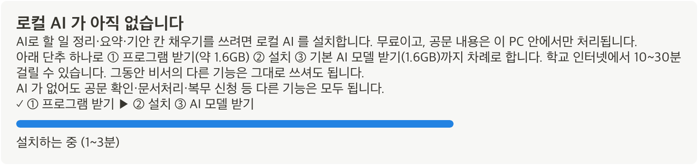
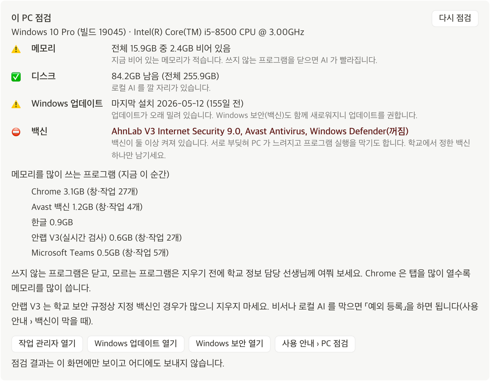

1시작 전에
무엇이 있어야 하는지, 그리고 학교 PC 에서 먼저 볼 것.
| 필요한 것 | 설명 |
|---|---|
| Windows 10·11 PC | 학교 업무용 PC. 관리자 권한은 필요 없습니다. |
| Chrome | 비서는 PC 에 깔린 Chrome 으로 업무포털을 엽니다. 없으면 먼저 설치하세요. |
| 업무포털 인증서 | 평소 쓰는 교육행정 전자서명 인증서. 비밀번호는 아침에 직접 넣습니다. |
| 전북 업무포털 | 전북 업무포털(K-에듀파인·4세대 나이스)용입니다. 다른 시·도는 아직 쓸 수 없습니다. |
2설치
세 단계면 끝납니다. 이 PC 의 이 사용자에게만 설치됩니다.
① 내려받기
- 학교 PC 의 Chrome 에서 홈페이지를 열고 내려받기 (Windows)를 누릅니다.
EdufineAssistant_Setup_….zip파일이 다운로드 폴더에 받아집니다. 저장소 페이지가 열리면 아래쪽 Assets 에서 그 zip 을 누르세요.- Chrome·Edge 가 「일반적으로 다운로드되지 않는 파일」이라며 막으면 3장 › 브라우저가 막을 때를 보세요.
② 차단 해제하고 압축 풀기
- 받은 zip 파일을 마우스 오른쪽 클릭 › 속성.
- 맨 아래 「보안: 이 파일은 다른 컴퓨터에서 가져왔으므로…」 옆 「차단 해제」에 체크 › 확인.
- zip 을 오른쪽 클릭 › 압축 풀기(또는 반디집 등으로 풀기).
「차단 해제」 칸이 없으면 이미 풀려 있는 것이니 그냥 압축을 푸세요.
③ 설치하고 켜기
- 풀린 폴더의
에듀파인비서_설치_….exe를 두 번 누릅니다. - 파란 「Windows의 PC 보호」 창이 뜨면 추가 정보 → 실행. 돈을 내고 받는 서명 인증서가 없는 무료 프로그램이라 뜨는 안내이고, 바이러스가 있다는 뜻은 아닙니다.
- 「에듀파인 비서 설치」 창에서 설치 → 끝나면 비서 켜기.
%LOCALAPPDATA%\Programs\EdufineAssistant, 선생님 자료(설정·기록·로그인용 Chrome 정보)는 %LOCALAPPDATA%\teacherK\EdufineAssistant 에 둡니다. 시작 메뉴와(고르면) 바탕화면에 바로가기가 생깁니다.
받은 파일이 진짜인지 확인하려면 (파일 지문)
홈페이지 내려받기 단추 아래에 파일 지문(SHA-256)이 적혀 있습니다. 받은 zip 의 지문이 같으면 중간에 바뀌지 않은 진짜 파일입니다.
- 시작 메뉴에서
PowerShell을 찾아 엽니다. - 아래 줄을 붙여 넣고(마우스 오른쪽 클릭 = 붙여넣기) Enter. 파일 이름의 판 번호는 받은 파일에 맞게 바꾸세요.
Get-FileHash $HOME\Downloads\EdufineAssistant_Setup_0.42.1.zip
나온 Hash 값이 홈페이지의 지문과 같으면 됩니다(대소문자는 상관없음).
3백신이 막을 때
비서는 악성코드가 없는 깨끗한 프로그램이지만, 새로 나온 무료 프로그램이라 백신이 "처음 보는 프로그램"으로 막을 수 있습니다.
왜 막히나요?
- 백신은 쓰는 사람이 적고 서명이 없는 새 프로그램을 "평판이 낮다"며 막습니다. 바이러스를 찾았다는 뜻이 아닙니다.
- 예를 들어 안랩 V3 의 「클라우드 평판 기반 실행 차단」은 기본 설정에서 처음 발견된 지 20일 안이고 쓰는 사람이 500명 이하인 파일을 막습니다(안랩 도움말). 새 판이 나온 직후에 특히 잘 막히는 까닭입니다.
- 새 판이 나올 때마다 만든 사람이 안랩·마이크로소프트 등에 오진(오탐) 신고를 합니다. 신고가 받아들여지면 그 판은 더 이상 막히지 않습니다.
- 실제 학교 PC 에서 Windows 기본 백신(Windows 보안)은 비서를 막지 않았습니다. 파란 「PC 보호」 창은 백신이 아니라 SmartScreen 안내입니다(2장).
브라우저가 내려받기를 막을 때
Chrome
- 아래쪽(또는 오른쪽 위 다운로드 표시)에 「위험할 수 있는 파일」이 뜨면 그 줄의 ⋮ 또는 화살표.
- 유지 또는 계속.
Microsoft Edge
- 다운로드 창에서 막힌 파일 줄의 ….
- 유지 → 자세히 표시 → 그래도 유지.
백신별 예외 등록
등록할 곳은 비서 프로그램 폴더 하나입니다. 로컬 AI(15장)를 쓴다면 Ollama 폴더도 함께 등록하세요. 폴더 주소는 파일 탐색기 주소창에 그대로 붙여 넣으면 열립니다.
| 무엇 | 폴더 |
|---|---|
| 에듀파인 비서 | %LOCALAPPDATA%\Programs\EdufineAssistant |
| 로컬 AI(Ollama) | %LOCALAPPDATA%\Programs\Ollama |
아직 설치 전이라 폴더가 없으면, 받은 설치 파일(zip 을 푼 폴더)을 먼저 예외로 두고 설치한 뒤 위 폴더를 등록하세요.
안랩 V3 (Lite · Internet Security)
- 작업 표시줄 오른쪽 V3 아이콘을 두 번 눌러 V3 를 엽니다.
- 오른쪽 위 환경 설정(톱니) › 왼쪽 목록의 검사 예외 설정.
- 검사 예외 사용에 체크 › 「검사 예외 대상 설정」의 폴더 추가.
- 위 폴더를 고르고 확인 › 목록에 들어갔는지 보고 적용.
실행하자마자 「평판」 때문에 막혔다면, 막힘 알림 창에 허용·예외 단추가 있으면 그것을 누르세요. 학교에서 중앙 관리하는 V3 는 설정이 잠겨 있을 수 있습니다. 그때는 학교 정보 담당 선생님께 「이 폴더 예외 등록」을 부탁하세요. (안랩 도움말: 검사 예외 설정)
알약
- 알약을 열고 오른쪽 위 환경 설정.
- 왼쪽 목록에서 예외 설정(판에 따라 「탐지 제외」) 을 찾아 폴더 추가(또는 추가).
- 위 폴더를 고르고 확인 › 적용.
알약 판마다 메뉴 이름이 조금 다릅니다. 「예외」·「제외」가 들어간 항목을 찾으세요.
Avast
- Avast 를 열고 오른쪽 위 ☰ 메뉴 › 설정.
- 일반 › 예외 › 예외 추가 › 다음 › 「위험을 이해합니다」.
- 파일/폴더 탭에서 폴더 아이콘 › 위 폴더 › 확인 › 추가.
학교에 지정 백신(V3 등)이 따로 있다면, 개인이 깐 Avast 는 지우는 편이 낫습니다. 백신 둘이 함께 돌면 서로 부딪힙니다. (Windows 설정 › 앱 › 설치된 앱 › Avast › 제거)
Windows 보안 (기본 백신)
- 시작 메뉴에서 Windows 보안을 찾아 열고 › 바이러스 및 위협 방지.
- 「바이러스 및 위협 방지 설정」의 설정 관리 › 맨 아래 제외 › 제외 추가 또는 제거.
- 제외 사항 추가 › 폴더 › 위 폴더.
평소에는 필요 없습니다. 비서가 막혔을 때만 하세요.
- 백신의 실시간 검사를 통째로 끄기 — 비서 폴더만 예외로 두면 충분합니다.
- 「다운로드」 폴더나 C 드라이브 전체를 예외로 두기 — 꼭 필요한 폴더만 엽니다.
그래도 막히면 비서 화면 맨 아래 「💡 업무 흐름·오류·의견 보내기」(또는 의견 보내기 폼)에 어떤 백신이, 어떤 문구로 막았는지 적어 주세요. 그 백신 회사에 오진 신고를 하겠습니다.
4처음 설정
처음 켜면 「처음 설정 — 에듀파인 비서」 창이 뜹니다. 학교·선생님마다 다른 값만 묻습니다.
| 칸 | 무엇을 적나요 |
|---|---|
| 학교 이름 | 꼭 적어야 합니다. 예) ○○초등학교. 우리 학교가 보낸 공람을 정리 대상에서 빼는 데 씁니다. |
| 근무 지역 | 예) 전주. 출장 장소에 이 낱말이 있으면 관내로 봅니다. |
| 연락처 | 숫자만. 육아시간·출장 신청 창에 미리 채웁니다. 비워도 됩니다. |
| 꼭 남길 낱말 | 예) 5학년, 담임, 방과후. 이 낱말이 든 공람은 「읽지 않아도 될 공람」으로 고르지 않습니다. |
| 맡은 업무 | 체크하면 그 업무 팩이 바로 켜집니다(18장). 지금은 「정보」가 있습니다. |
| 자동으로 켜기 | 「컴퓨터를 켤 때 비서도 자동으로 켜기」. 처음에는 체크돼 있습니다. |
창 아래에는 이 PC 점검 결과가 짧게 보입니다. ⚠·⛔ 표시가 있으면 16장을 참고하세요. 저장을 누르면 「이제 업무포털에 로그인해 주세요」가 뜹니다.
이 값들은 이 PC 안에만 저장되고, 나중에 ⚙ 설정에서 언제든 바꿀 수 있습니다.
5아침에 할 일
인증서 비밀번호 한 번이면 됩니다.
- 컴퓨터를 켜면 비서도 저절로 켜집니다.
- 비서가 Chrome 으로 업무포털을 열고 인증서 로그인 단추까지 눌러 둡니다. 인증서 창이 앞으로 나옵니다.
- 선생님이 인증서 비밀번호를 넣고 확인. 비밀번호는 어디에도 저장하지 않습니다.
- 비서가 K-에듀파인과 나이스를 열고, Chrome 을 작업 표시줄에 숨긴 뒤 공문을 확인합니다.
- 로그인은 오후 3시까지 20분마다 저절로 연장합니다. 끝 시각은 ⚙ 설정 › 확인 시각 › 「로그인 유지 끝」에서 바꿉니다.
- 30분 동안 로그인이 없으면 기다림을 멈춥니다. 나중에 🌐 단추를 누르면 다시 로그인 창을 엽니다.
- 비서는 한 PC 에 하나만 켤 수 있습니다.
6화면 둘러보기

위쪽 단추 (왼쪽부터)
| 단추 | 하는 일 |
|---|---|
| ↻ 코드 새로고침 | 만든 사람이 쓰는 단추입니다. 누르지 않으셔도 됩니다. |
| ☑ 자가 점검 | 로그인·목록·나이스까지 실제로 돌려 봅니다(저장·신청 없음, 1~2분). 문제가 있을 때만. |
| 🌐 Chrome | 숨겨 둔 Chrome 을 펼치거나, 닫혔을 때 다시 엽니다. |
| ⏻ 자동 종료 | 오늘 컴퓨터를 몇 시에 끌지(14장). |
| ☾ 화면 밝기 | 어두운 화면 / 밝은 화면. |
| ? 사용 안내 | 이 안내서를 엽니다. |
| ⚙ 설정 | 환경설정(17장). |
그 옆의 「● 교장 재실」·「○ 교감 출장」 같은 표시는 나이스 근무상황을 10분마다 읽은 것입니다. 누르면 오늘 근무상황 표가 열립니다.
가운데
- 숫자 카드 3개 — 결재대기·내가 올린 문서·공람대기. 누르면 그 목록으로 내려갑니다.
- 도구줄 — ↻ 공문 확인, 복무 ▾, 기안 ▾, 연수 관리, 🔍 공문 찾기.
- 목록 — 위에서부터 오늘 나의 일정, 내가 올린 문서, 이달의 업무(업무 팩이 있을 때), 다가오는 기한, 결재대기, 공람대기.
공문 한 줄
- 제목을 누르면 에듀파인에서 그 공문이 열립니다.
- 줄의 빈 곳을 누르면 아래에 자세히 보기가 열리고, AI로 할 일 정리·기한 찾기·출장 신청 채우기·회신 초안 → 기안기 같은 단추가 나옵니다.
- 앞의 체크칸으로 여러 건을 고르면 위에 체크 줄이 생기고, 문서처리·공람 지정·공람 완료 처리·체크한 공문 요약을 한꺼번에 할 수 있습니다.
- 표시 — 새(새로 온 것), ★(놓치지 말 것), 할일(제출·회신·보고 등), 홍보, 업무 팩 이름(내 업무).
맨 아래에는 확인 시각과 💡 업무 흐름·오류·의견 보내기 단추가 있습니다.
7공문 확인·★·기한
켜 두기만 하면 정해진 시각에 저절로 확인합니다.
| 무엇 | 언제 (기본) |
|---|---|
| 결재대기 | 08:50 · 12:10 · 14:40 |
| 공람대기 | 10:00 · 12:00 · 14:00 |
| 내가 올린 문서 | 30분마다 |
| 교장·교감 재실 | 10분마다 |
지금 바로 보고 싶으면 ↻ 공문 확인. 시각은 ⚙ 설정 › 확인 시각에서 바꿉니다(예: 09:30, 13:00).
★ 와 할일 표시
- ★ — 제목에 「★ 놓치지 말 것」 낱말(기본: AI, 인공지능, 디지털, 정보, SW, 공모, 지원사업 등)이 있거나, 업무 팩이 내 업무로 알아본 공문.
- 할일 — 결재대기 제목에 제출·회신·보고·조사·협조·신청·점검·명단 등이 있는 공문.
- 낱말은 ⚙ 설정 › 표시 낱말·연수에서 고칩니다. 🔍 자동으로 찾기를 누르면 지난 1년 동안 받은 공문 제목에서 자주 나온 낱말을 권해 줍니다.
다가오는 기한
- 공문을 AI로 정리·요약하거나 기한 찾기를 누르면, 공문 속 「…까지」 날짜를 「다가오는 기한」에 모읍니다.
- D-7·3·1·당일에 근무 시간(7:30~18:00) 안에 알려 드립니다.
- 직접 넣으려면 + 직접 넣기, 끝난 것은 완료, 틀린 것은 ✕.
8문서처리 · 공람 지정
결재대기 공문 여러 건을 한 번에 처리합니다. 확인 목록을 보신 뒤에만 움직입니다.

문서처리
- 결재대기에서 처리할 공문들의 체크칸을 누릅니다.
- 위 체크 줄의 문서처리.
- 처음 한 번은 「과제카드 목록이 아직 없습니다」 → 목록 읽어 오기. 비서가 과제카드 목록만 읽고 닫습니다.
- 「문서처리 N건」 확인표에서 공문마다 과제카드를 확인합니다. 비서가 지난번 고른 것, 업무 팩, 제목 낱말 순서로 권합니다. 직접 고친 것은 다음부터 비슷한 공문에 권합니다.
- N건 문서처리를 누르면 비서가 차례로 공문을 열어 카드를 넣고 [문서처리]까지 누릅니다.
공람 지정
- 공문을 체크하고 공람 지정.
- 처음 한 번은 「교직원 명단이 아직 없습니다」 → 명단 읽어 오기. 이름·직위만 읽어 이 PC 에 둡니다.
- 확인표의 「공람」 칸에서 전체 또는 그룹을 고릅니다. 「모두 같게」로 한 번에 정할 수 있습니다.
- N건 공람 지정 + 문서처리. 공람은 문서처리와 함께 보내집니다.
공람 그룹 만들기
⚙ 설정 › 공람 탭 › + 새 그룹 → 이름(예: 5학년, 담임, 부장) → 명단에서 체크. 체크하는 즉시 저장됩니다.
9공람대기 정리
연수·모집·홍보처럼 읽지 않아도 될 것 같은 공람을 골라 보여 드립니다. 정리는 보고 나서 합니다.
- 공람대기에 「🧹 읽지 않아도 될 것 같은 공람 N건」이 뜨면 보고 정리하기.
- 모두 체크돼 있습니다. 남길 것은 체크를 빼세요. 줄마다 고른 까닭(예: 제목에 '연수')이 붙어 있고, 제목을 누르면 공문이 열립니다.
- 체크한 것 공람 완료.
- 우리 학교가 보낸 것, 「꼭 남길 낱말」·★ 낱말이 든 것, 내 업무 공문, 「참고」가 든 것은 고르지 않습니다.
- 공람 완료한 공문도 에듀파인 공람함에서 언제든 다시 볼 수 있습니다.
- 손으로 고르려면 공람대기 목록 보기 ▾ → 「홍보 모두 체크」·「전체 체크」 → 공람 완료 처리.
10복무 신청
나이스 신청 창을 채워 두기만 합니다. [승인요청]은 선생님이 누르세요.

| 메뉴 (복무 ▾) | 고르는 것 |
|---|---|
| 🍼 육아시간 신청 | 기간(오늘 하루·이번 주·다음 주), 시작 시각, 연락처. 여러 날이면 매일 같은 시간으로 냅니다. |
| 🚪 조퇴 신청 | 날짜, 나가는 시각, 사유, 연락처. |
| 🩺 병가 신청 | 시작·끝 날짜, 사유, 연락처. |
| 🚌 출장 신청 | 날짜·시간, 관내/관외, 장소, 여비, 용무, 연락처. |
| 📄 개인근무상황 열기 | 나이스 복무 › 개인근무상황관리 화면을 엽니다. |
공문으로 출장 신청 채우기
- 출장 공문을 골라(줄 누르기) 출장 신청 채우기. 여러 건이면 체크해서 체크 줄의 같은 단추.
- 비서가 공문을 읽어(10~30초) 일시·장소·용무를 뽑아 창에 채워 보여 줍니다. 맞는지 보고 고치세요.
- 출발 시각은 행사 시작에서 가는 시간(관내 30분, 관외 50분)을 뺀 값입니다. ⚙ 설정 › 복무에서 바꿉니다.
- 나이스 창이 채워지면 확인하고 [승인요청]은 직접.
육아시간을 여러 날로 낸 뒤 출장 등으로 쓰지 않게 된 날은 나이스에서 따로 취소해야 합니다. 구글 캘린더를 연결해 두면 출장 일정이 캘린더에도 들어갑니다(19장).
11기안
초안을 채워 에듀파인에 저장까지 합니다. [결재요청]·[결재올림]은 선생님이 누르세요.
🧾 품의 초안
- 기안 ▾ › 품의 초안.
- 제목과 품목(품명·규격·수량·단가)을 적습니다. 견적서 파일에서를 누르면 견적서 표를 읽어 채웁니다. 예산·사업 공문을 골라 두었다면 고른 공문에서.
- 「복사할 지난 품의」를 고릅니다. 예산 과목을 그대로 쓰기 위해서입니다. 목록이 비었으면 「지난 품의 목록 새로 읽기」.
- 에듀파인에 저장 → 저장이 끝나면 에듀파인에서 내용을 확인하고 [결재요청].
📝 문서 기안
- 종류를 고릅니다 — 계획, 결과 보고, 회신·제출, 자유 요청.
- 주제와 메모(들어갈 내용을 짧게)를 적습니다. 목록에서 공문을 골라 두었다면 그 공문을 근거로 관련·일시·장소·기한을 채웁니다.
- 틀로 초안 만들기(AI 없이) 또는 AI로 칸 채우기(메모를 칸에 옮겨 적기만, 10~30초).
- 제목·본문을 고친 뒤 기안기에 넣고 임시저장. 결재선·수신·붙임 확인과 [결재올림]은 선생님이 합니다.
공문·메모에 없는 숫자가 들어가면 ⚠ 표시로 알려 드립니다. [ ] 는 비워 둔 칸입니다.
📅 매달 하는 기안

- 처음 열면 내 문서함 › 기안한 문서에서 지난 기안을 읽습니다(1~2분).
- 매달 같은 꼴로 올린 기안이 목록에 나옵니다. 하나 고르고 이번 판 만들기.
- 달·연도는 이번 달로 바꾸고, 날짜·금액·인원이 든 줄은 「⚠ 확인할 줄」로 표시합니다. 꼭 고쳐 주세요.
- 기안기에 넣고 임시저장. 품의(지출)는 품의 초안으로 넘어갑니다.
공문을 열어 회신 초안 → 기안기를 누르면 회신 초안을 AI로 써서 기안기에 임시저장까지 합니다(1~2분).
12지난 공문 찾기
"작년 그 공문 어디 있더라" 할 때.

- 🔍 공문 찾기.
- 낱말을 적습니다. 띄어 쓰면 모두 들어간 것만 찾습니다(예:
정보보안 점검). - 찾을 곳 — 「접수한 문서」·「공람한 문서」(둘 다 기본). 찾기.
- 지난 1년 공문의 제목만 읽습니다(1~2분). 결과에서 열기.
13연수 관리
나이스 연수 이력을 읽어 올해 의무연수를 다 들었는지 맞춰 봅니다.
- 목록·집계 — 기간(올해·이번 학년도·직접)별 연수 시간과 목표(기본 60시간). 분야가 틀리면 분야 칸을 누르면 바뀌고 기억합니다. CSV 로 저장할 수 있습니다.
- 의무연수 현황 — 전북교육연수원 기준으로 ✓ 완료 · ◐ 진행 · ✗ 부족 · ? 확인. 교내 연수처럼 나이스에 안 남는 것은 교내 연수 등 직접 표시….
- 이수증 — 다운로드 폴더에 이수증·수료증 파일이 생기면 「날짜_과정명」으로 모을지 묻습니다. 처음에 모을 폴더를 고릅니다. 원본은 그대로 둡니다.
위쪽 연수원 바로가기 ▾로 전북교육연수포털·전북교육청교육연수원·중앙교육연수원을 엽니다.
14컴퓨터 자동 종료
일찍 나가 원격으로 일하다가 정한 시각이 되면 학교 PC 를 끕니다. 기본은 꺼져 있습니다.
- 매일 끄기 — ⚙ 설정 › 자동 종료에서 「매일 자동으로 끄기」, 시각(기본 16:40), 요일, 미리 알림(기본 5분).
- 오늘만 — 위쪽 ⏻ 단추 → 「설정대로 / 오늘만 이 시각 / 오늘은 끄지 않기」.
- 끄기 전에 「컴퓨터를 곧 끕니다」 창이 뜹니다. 10분 미루기 · 오늘은 안 끄기 · 지금 끄기.
- 저장하지 않은 한글·엑셀 문서가 있으면 Windows 가 멈추고 묻습니다(강제로 끄지 않음).
15로컬 AI
공문 요약·할 일 정리·기안 칸 채우기를 PC 안에서 돌리는 AI 입니다. 없어도 다른 기능은 모두 됩니다.
무엇이 다른가요?
- 공문 내용을 인터넷의 AI 서비스로 보내지 않습니다. PC 안의 AI(Ollama)만 씁니다.
- 인터넷은 처음 AI 를 받을 때만 씁니다.
- 그 대신 PC 의 메모리와 디스크를 씁니다. 한 번 쓰는 데 20~40초쯤 걸립니다(학교 PC 기준).
설치 — 단추 하나

- ⚙ 설정 › AI 탭을 엽니다. 맨 위에 이 PC 점검 결과가 먼저 나옵니다.
- 로컬 AI 설치 (한 번에).
- ① 프로그램 받기(약 1.6GB) ② 설치 ③ 기본 AI 모델 받기(1.6GB)를 차례로 합니다. 학교 인터넷에서 10~30분 걸릴 수 있고, 그동안 비서의 다른 기능은 그대로 써도 됩니다.
- 「로컬 AI 를 설치했습니다」가 뜨면 끝입니다.
필요한 사양
| 항목 | 기준 |
|---|---|
| 메모리 | 8GB 이상(16GB 권장). 기본 모델은 쓰는 동안 약 2GB 를 씁니다. |
| 디스크 | 남은 공간 10GB 이상. 프로그램과 모델을 합해 약 7GB 를 씁니다. |
기준에 못 미치면 「이 PC 에는 로컬 AI 를 권하지 않습니다」라고 먼저 묻습니다. 설치는 할 수 있지만 아주 느릴 수 있습니다.
모델 고르기·지우기
- EXAONE 3.5 (2.4B) — 기본. LG 가 만든 한국어 모델로 가볍고 빠릅니다.
- Gemma 4 (E2B) — 말투가 조금 더 공문답지만 메모리를 약 8GB 씁니다.
- 각 모델의 받기·이 모델 쓰기·지우기로 관리합니다. AI 를 그만 쓰려면 맨 아래 AI 모두 지우기 (Ollama 제거).
설치가 안 될 때
- 「받은 파일을 백신이 막았거나 지운 것 같습니다」 — 백신이 Ollama 설치 파일을 막은 것입니다. 3장 › 백신별 예외 등록에서 Ollama 폴더를 등록한 뒤 다시 누르세요.
- 「Windows 가 받은 파일의 서명을 확인하지 못해…」 — Windows 업데이트가 오래 밀린 PC 에서 생깁니다. Windows 업데이트 뒤 다시 누르세요.
- 「받다가 끊겼습니다」 — 학교 인터넷이 잠깐 끊긴 것입니다. 다시 누르면 처음부터 다시 받습니다.
- 「AI 모델을 받지 못했습니다」 — 프로그램은 설치됐습니다. 설정 › AI 에서 모델의 받기만 다시 누르세요.
- 「인터넷에 닿지 못했습니다」 — 학교망이 큰 파일을 막았을 수 있습니다. 잠시 뒤 다시 누르거나, 직접 내려받기 (ollama.com)로 받아 설치한 뒤 이 탭을 다시 여세요.
- AI 단추를 눌렀는데 「Ollama 가 켜져 있는지 확인하세요」 — 작업 표시줄 오른쪽에 라마 모양 Ollama 아이콘이 있는지 보세요. 없으면 시작 메뉴에서 Ollama 를 켭니다.
16이 PC 점검
PC 가 느리거나 AI 를 깔기 전에, 이 PC 상태를 한눈에 봅니다. 읽어서 보여 주기만 하고 아무것도 바꾸지 않습니다.

⚙ 설정 › AI 탭 맨 위에 있고, 처음 설정 때도 한 번 보여 드립니다. ✅ 괜찮음 · ⚠️ 살펴볼 것 · ⛔ 고쳐야 할 것.
메모리가 모자랄 때
- 작업 관리자 열기 → 「메모리」 열 제목을 눌러 많이 쓰는 순서로 봅니다.
- 지금 쓰지 않는 프로그램은 닫습니다. Chrome 은 탭이 많을수록 메모리를 많이 씁니다.
- 모르는 프로그램은 함부로 지우지 말고 학교 정보 담당 선생님께 여쭤 보세요.
- 컴퓨터를 켤 때 저절로 켜지는 프로그램이 많으면 작업 관리자 › 시작 프로그램 탭에서 쓰지 않는 것을 「사용 안 함」으로 바꿀 수 있습니다.
Windows 업데이트가 밀렸을 때
Windows 업데이트 열기 → 업데이트 확인 → 다 받으면 다시 시작. Windows 보안(기본 백신)의 검사 정보도 함께 새로워집니다. 학교 PC 는 퇴근 전에 걸어 두고 가면 편합니다.
백신이 둘 이상일 때
- 백신은 하나만 켜 두는 것이 맞습니다. 둘이 함께 돌면 서로 검사하느라 PC 가 느려지고 프로그램 실행을 막기도 합니다.
- 학교 지정 백신(대개 V3)은 남기고, 개인이 깐 무료 백신(Avast 등)을 지우세요. 무엇이 지정 백신인지 모르면 정보 담당 선생님께 여쭤 보세요.
- Windows 보안이 「꺼짐」으로 보이는 것은 다른 백신이 켜져 있어서이니 괜찮습니다.
점검 결과는 비서 화면에만 보이고 어디에도 보내지 않습니다.
17설정 한눈에
⚙ 단추 → 환경설정. 아래 저장을 눌러야 바뀝니다(AI·캘린더·공람·업무 팩 탭은 누르는 즉시 적용).
| 탭 | 무엇을 바꾸나요 |
|---|---|
| 확인 시각 | 결재대기·공람 확인 시각, 내가 올린 문서 확인 간격, 로그인 유지 끝, 재실 표시. |
| 화면 | 밝기, 글자 크기, 항상 위, 자동으로 켜기, Chrome 숨겨 두기. |
| 복무 | 육아시간 시작 시각·사유·자녀, 연락처, 조퇴·병가 기본값, 출장 관내/관외 낱말과 가는 시간. |
| 자동 종료 | 매일 끄기, 시각, 요일, 미리 알림. |
| 표시 낱말·연수 | ★·홍보·할일 낱말, 연수 연간 목표 시간. |
| AI | 이 PC 점검, 로컬 AI 설치, 모델 받기·고르기·지우기. |
| 캘린더 | 구글 캘린더 연결(19장). |
| 공람 | 교직원 명단 읽기, 공람 그룹 만들기. |
| 업무 팩 | 켜 둔 팩, 받을 수 있는 팩, 파일로 추가. |
| 업데이트 | 지금 판 번호, 업데이트 확인. |
18업무 팩
맡은 업무의 요령을 묶은 꾸러미입니다.

- 그 업무에 오는 공문 종류, 달마다 할 일, 기안 틀, 공람 대상을 담습니다.
- 켜 두면 그 업무 공문에 배지·★·할 일이 붙고, 문서처리 때 과제카드·공람을 권하고, 「이달의 업무」에 달력이 뜹니다.
- ⚙ 설정 › 업무 팩에서 켜고 끕니다. 팩은 프로그램과 따로, 저절로 새 판으로 바뀝니다.
- 내 업무 팩이 없으면 업무 흐름 보내기로 알려 주세요. 팩으로 만들어 모든 선생님 비서에 넣어 드립니다.
19구글 캘린더 (선택)
출장 신청 창을 채울 때 그 일정을 내 구글 캘린더에도 넣습니다. 처음 한 번 10분쯤 준비가 필요합니다.
연결하는 방법
- 구글 클라우드 콘솔에서 새 프로젝트를 만듭니다(이름 예: 에듀파인 비서).
- API 및 서비스 › 라이브러리 › Google Calendar API › 사용.
- OAuth 동의 화면 — 외부, 앱 이름 「에듀파인 비서」, 내 구글 계정을 테스트 사용자로 추가한 뒤 앱 게시. 게시하지 않으면 7일마다 다시 연결해야 합니다.
- 사용자 인증 정보 › OAuth 클라이언트 ID › 유형 데스크톱 앱 › JSON 다운로드.
- 비서 ⚙ 설정 › 캘린더 › 앱 등록 파일(JSON) 고르기 → 구글 캘린더 연결 → 브라우저에서 로그인 후 허용.
- 「Google에서 확인하지 않은 앱」이 뜨면 고급 → 에듀파인 비서(으)로 이동. 선생님이 직접 만든 앱이라 뜨는 안내입니다.
공문 본문은 보내지 않고 출장 일정(제목·시간·장소·용무)만 넣습니다. 열쇠는 이 PC 에만 암호화해 둡니다.
20업데이트 · 지우기
업데이트
- 켤 때와 켜 둔 동안 6시간마다 새 판을 확인합니다. 새 판이 있으면 「업데이트할까요?」라고 묻습니다.
- 업데이트를 누르면 뒤에서 받아 두었다가, 다음에 비서를 켤 때(예: 내일 아침) 새 판으로 바뀝니다. 하던 일이 끊기지 않습니다.
- 로그인 정보·설정·기록은 그대로 남습니다. 바로 확인하려면 ⚙ 설정 › 업데이트 › 업데이트 확인.
지우기
- 비서를 끕니다.
- Windows 설정 › 앱 › 설치된 앱 › 「에듀파인 비서」 › 제거.
- 「선생님 자료도 지울까요?」에서 아니요(기본)를 고르면 자료를 남겨 두어, 다시 설치하면 이어서 씁니다.
로컬 AI 는 비서와 따로 지웁니다: ⚙ 설정 › AI › AI 모두 지우기 (Ollama 제거).
21문제가 생겼을 때
「하던 일을 멈췄습니다」 창이 뜨면
- 창에 적힌 안내대로 한 번 더 해 봅니다. 대개 에듀파인이 느렸거나 다른 창이 앞에 떠 있던 경우입니다.
- 또 생기면 📋 기록 복사 → 의견 보내기를 누르고, 폼의 「어떻게 됐나요?」에 붙여 넣어 주세요. 고쳐서 새 판으로 내보냅니다.
자주 겪는 일
설치 파일이 받아지지 않아요 / 실행이 안 돼요
브라우저나 백신이 막은 것입니다. 3장을 보세요. 파란 「Windows의 PC 보호」 창은 추가 정보 → 실행입니다.
Chrome 이 안 보여요 / 실수로 닫았어요
비서 위쪽 🌐 단추를 누르세요. 숨겨 둔 Chrome 을 펼치거나 다시 엽니다.
「로그인이 끊겼습니다」라고 나와요
업무포털 세션이 끝난 것입니다. 앞으로 나온 인증서 창에 비밀번호를 넣으세요. 오후에 자주 끊기면 ⚙ 설정 › 확인 시각 › 「로그인 유지 끝」을 늦추세요.
「에듀파인 비서가 이미 켜져 있습니다」
비서는 한 PC 에 하나만 켜집니다. 작업 표시줄에서 이미 켜진 비서 창을 찾으세요.
PC 가 너무 느려요
⚙ 설정 › AI 의 이 PC 점검을 보세요. 메모리를 많이 쓰는 프로그램, 밀린 업데이트, 겹친 백신이 대부분의 원인입니다.
AI 단추가 안 돼요
로컬 AI 가 없거나 꺼져 있습니다. 15장을 보세요.
무엇이 문제인지 모르겠어요
위쪽 ☑ 자가 점검을 누르면 로그인·목록·나이스까지 실제로 돌려 보고 어디서 막히는지 알려 줍니다(저장·신청 없음, 1~2분). 결과를 복사해 의견 보내기에 붙여 주세요.
22비서가 지키는 것
- 비밀번호는 저장하지 않습니다. 인증서 비밀번호는 아침에 선생님이 직접 넣습니다.
- 마지막 단추는 선생님이 누릅니다. 결재올림·승인요청·결재요청은 비서가 누르지 않습니다. 문서처리도 확인 목록을 보신 뒤에만 합니다.
- 공문은 PC 밖으로 나가지 않습니다. AI 도 PC 안의 로컬 AI 만 씁니다.
- 기록은 이 PC 에만 둡니다. 로그인 정보·설정·기록은 이 PC 의 선생님 사용자 폴더에만 있습니다.
- PC 를 함부로 바꾸지 않습니다. 이 PC 점검은 읽기만 하고, 프로그램을 끄거나 지우지 않습니다.
에듀파인 비서는 현직 교사가 만들어 무료로 나누는 개인 도우미입니다. 교육청·업무포털 운영 기관의 공식 프로그램이 아닙니다.